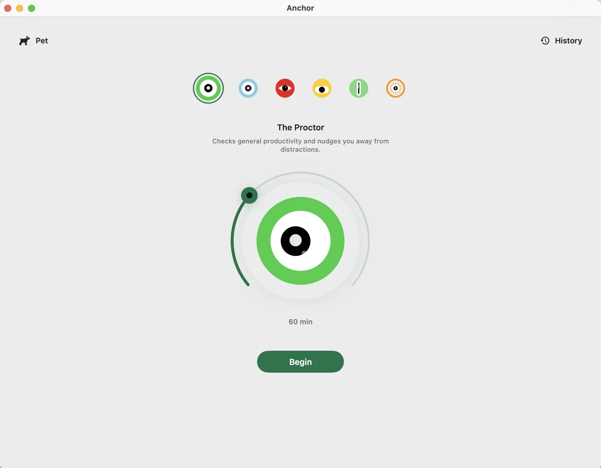
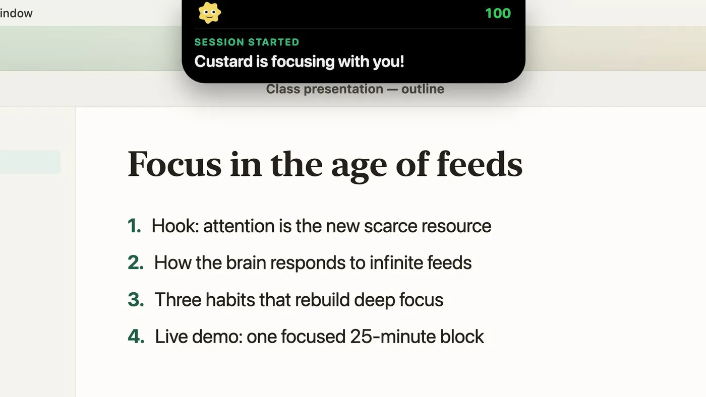
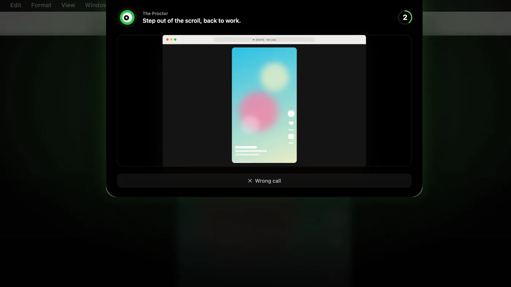
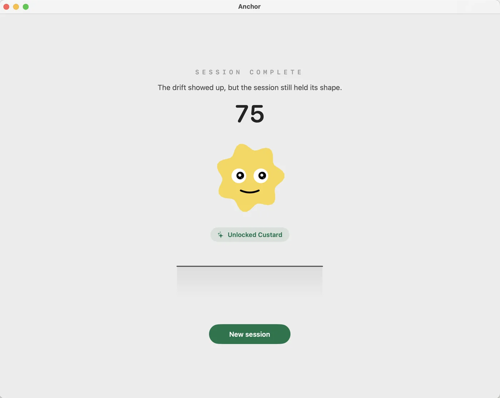

Anchor: AI Focus · macOS
Focus with intent.
An on-device AI proctor that watches your screen while you work — and steps in the moment you drift.
macOS 14.1+ on Apple silicon · Direct Distribution · Free download
How it works
It steps in the moment you drift.
-

Start a session
Pick a proctor and a timer, then press Begin.
-

It watches your screen
An on-device model checks what you're doing against your goal.
-

It pulls you back
Drift into a feed and an overlay plus a spoken reminder bring you back.
Real stakes
Your focus keeps them alive.
Every session ends with a focus score. Score high to earn a collectible pet — let a session fall apart and you can lose one.
